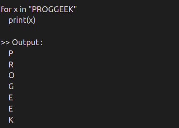

8.Loops
Python Loops.
In general, statements are executed sequentially: The first statement in a function is executed first, followed by the second, and so on. There may be a situation when you need to execute a block of code several number of times.
Programming languages provide various control structures that allow for more complicated execution paths.
A loop statement allows us to execute a statement or group of statements multiple times. The following diagram illustrates a loop statement.

While Loop :
With the while loop we can execute a set of statements as long as a condition is true.
Syntax of while loop:

For Example :

In the while loop,expression is checked first. The body of the loop is entered only if the expression evaluates to True. After one iteration, the expression is checked again. This process continues until the expression evaluates to False.
Flow Chart of While loop

For Loop :
The for loop in Python is used to iterate over a sequence (list, tuple, string) or other iterable objects. Iterating over a sequence is called traversal.
Syntax of For loop:

Flow Chart of For Loop

For Example :

For Loop with if-else :
A for loop can have an optional else block as well. The else part is executed if the items in the sequence used in for loop exhausts.
The break keyword can be used to stop a for loop. In such cases, the else part is ignored.
Hence, a for loop's else part runs if no break occurs.
For Loop Example Program :

Here, the for loop prints items of the list until the loop exhausts. When the for loop exhausts, it executes the block of code in the else and prints No items left.